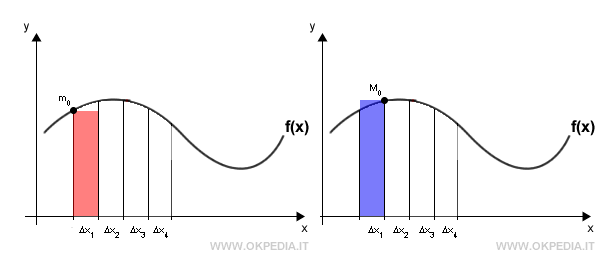

Lo Studio degli Integrali

Quest'anno la matematica è stata molto diversa: si è basata meno sulla memoria e sulle formule e molto più sul ragionamento. L'argomento principale che abbiamo trattato è stato quello degli integrali. All'inizio ho trovato questo argomento molto difficile, ed è proprio per questo che ho scelto di approfondirlo.
1. L'Integrale Definito (Calcolare le aree)
L'integrale definito serve a calcolare l'area della superficie compresa tra il disegno di una funzione (la curva) e l'asse orizzontale x, in un certo intervallo [a, b]. Le aree che si trovano sopra l'asse x si contano como positive, mentre quelle sotto come negative. Per fare questo calcolo si usa il Teorema Fondamentale del Calcolo:
2. L'Integrale Indefinito (Trovare la funzione di partenza)
L'integrale indefinito è l'operazione contraria della derivata. Data una funzione, lo scopo è trovare la sua funzione di partenza, chiamata primitiva. La formula generale è:
La C (costante di integrazione) si mette sempre perché tutte le funzioni che differiscono solo per un numero costante hanno la stessa identica derivata.
3. L'Integrale Improprio (Intervalli o funzioni infinite)
Un integrale si dice improprio quando saltano le regole normali perché c'è qualcosa di infinito. Ci sono due casi:
- Tipo 1 (Spazio infinito): Quando l'intervallo arriva fino a più o meno infinito (es. da un numero fino a +∞).
- Tipo 2 (Funzione infinita): Quando la funzione in un punto schizza verso l'alto o verso il basso all'infinito (presenza di un asintoto verticale).
In questi casi il calcolo si fa usando i limiti. Il risultato determina il carattere dell'integrale: Converge (se esce un numero fisso e l'area è finita), Diverge (se il risultato è infinito) o Indeterminato.